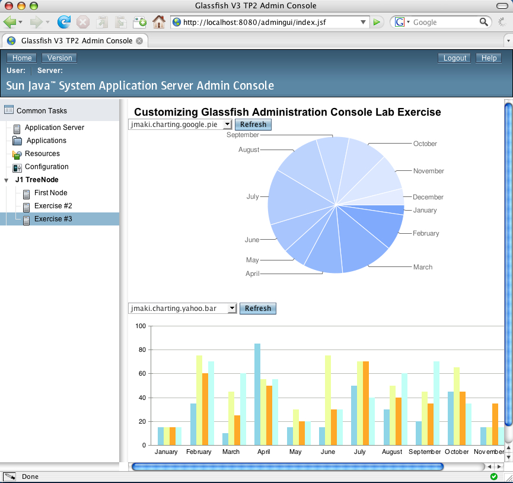

Glassfish Application Server has been widely adopted by many companies as well as individuals. This broad user base means there is a wide variety of needs from GlassFish, both in terms of the services it provides, as well as the management of those services. GlassFish v3 addresses the wide range of requirements through a modular architecture, which allows server components such as EJB, WebServices, JDBC, as well as numerous frameworks to be added and removed from the server as needed.
The Administration Console for GlassFish has not been left out when it comes to plugability. In order to manage a dynamic application server like GlassFish v3, the administration console must itself be very dynamic. This is a big challenge for a JavaServer™ Faces web application. How are resources (pages, images, etc.) discovered when the bits are not available at install time? How do you accommodate multiple "plugins" which want to contribute to the same page?
In this lab, we will explore these issues and learn how creating a pluggable JavaServer™ Faces application is addressed in GlassFish v3 Administration Console. You will learn how you may create a plugin for GlassFish v3 which integrates seamlessly with the administration console. This lab will guide you through the process of adding new tree nodes to the GlassFish navigation tree, adding new JavaServer Faces pages (including a jMaki Chart), and will show you how to bundle it together in a GlassFish v3 plugin module. Since GlassFish is an Open Source, Open Community application server, all the source code is available -- no secrets! Better yet, GlassFish is an Open Community, we welcome everyone to add their own custom GlassFish v3 plugins to the community!
Your completed lab will look similar to the image below:

Copyright
Copyright 2008 Sun Microsystems, Inc. All rights reserved. Sun, Sun Microsystems, the Sun logo, Solaris, Java, the Java Coffee Cup logo, JavaOne, the JavaOne logo, and all Solaris-based and Java-based marks and logos are trademarks or registered trademarks of Sun Microsystems, Inc. in the United States and other countries.
Prerequisites
This hands-on lab assumes you have some basic knowledge or programming experience on the following technologies.
Helpful Knowledge
System Requirements
Software needed for the lab
The following set of software will be used in this lab. This software should have been already made available to you, however, if you are setting up the environment yourself you will need to have the following software. If you have any questions on installation, please feel free to send questions to the email alias mentioned below.
The latest version of this zip file is available at JavaOne Online.
Notations used in this documentation
Lab exercises
Resources
Where to send questions or feedbacks on this lab and public discussion forums